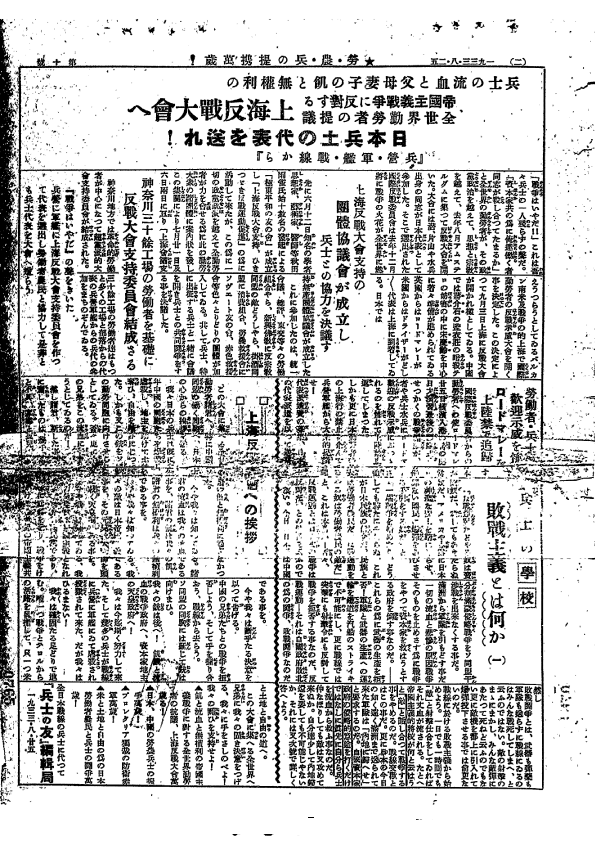
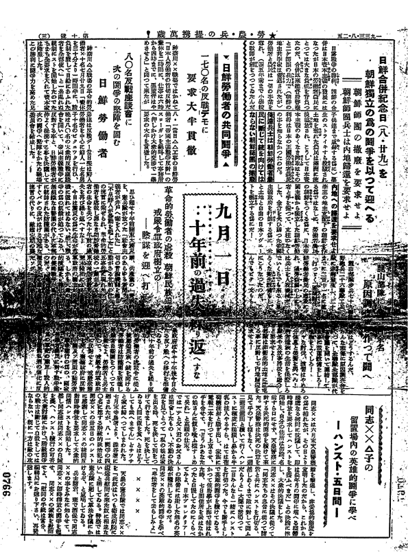
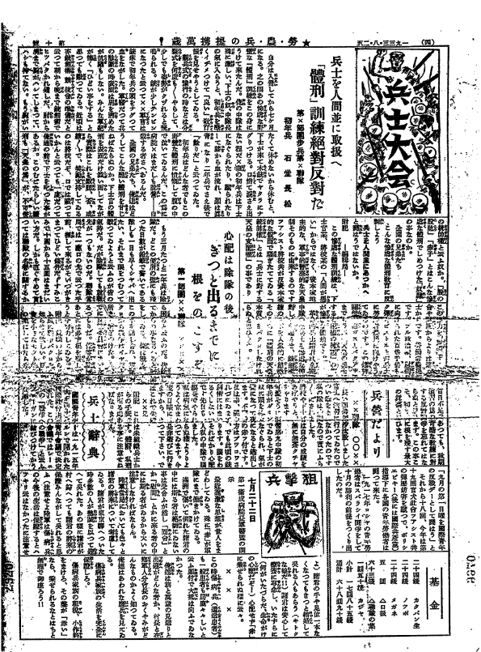
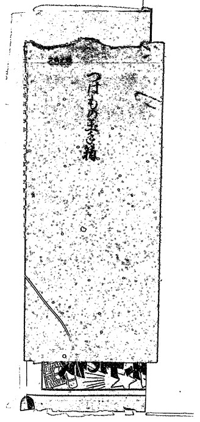
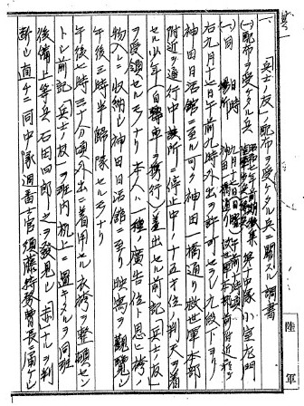

５、『兵士の友』10号 （1933（昭和8）年8月25日）




 手渡し用封筒
【詳細資料】


共産主義宣伝ビラノ配布ヲ受ケタル件ノ報告(PDF)
《所蔵》アジア歴史資料センター
【関連コラム】
「日本共産党の軍隊内部での歴史に残る反戦運動」と題した一文を見つけました。
以下にアドレスと記載内容を紹介し増す。
『創作の箱』 別館-短信-
長唄三味線演奏家 杵屋弥三右衛門の日々想うこと
http://yasaemon.cocolog-nifty.com/blog/2008/08/post_1ec6.html/
2008年8月17日 (日)
日本共産党の軍隊内部での歴史に残る反戦運動。
１９３１年７月６日付け日本共産党機関紙『赤旗』（せっき）は、日本軍による中国東北部侵略開始の約二ヶ月前に、
「日本帝国主義の戦争準備と斗（たたか）え！」と天皇制政府の中国侵略戦争発動の狙いを暴露して、国民に訴えました。
侵略戦争を開始した９月１８日の翌日には「帝国主義戦争反対、中国から手を引け」と 題する労働者、農民、兵士に対する「檄（げき）」を発表しました。
翌年９月には日本共産党の兵士向け新聞を刊行し、過酷な兵役や演習の実態、初年兵への残酷な体罰などを告発。
兵士の人間扱いを求め闘いを呼びかけました。
これらの呼びかけは、戦後、侵略戦争の実態が明るみに出る中で、非情に大切な呼びかけだった事が明らかに成ります。
上官の脅しによる中国人に対する初年兵の「刺突訓練」の悲劇、上官の命令による中国人への暴行と殺戮。
これらを、本来ならば事前に防ぐ事が出来た呼びかけでした。
この「兵士の友」は軍隊の内部でも配布されたのです。
この配布は直ちに近衛師団長から陸軍大臣、荒木貞夫に報告されたのです。
「共産主義宣伝ビラの配布を受けたる報告」として、当時既に弾圧を受けていた日本共産党の反戦運動の影響をいかに極度に警戒していたかを表しています。
１９３２年１０月には呉軍港内の党組織は「聳（そび）ゆるマスト｝」を発刊。
最盛期には百部以上発行し、呉、横須賀の兵舎内や軍艦「榛名」などで密かに配布されたのです。
治安維持法という弾圧法規による検挙者は七万五千人を超えますが、反戦運動が高まった
１９３１年から３３年までの三年間に検挙された日本共産党員は四万五千人になりました。 みな、戦争反対と国民主権を主張したのです。
皆さんに是非お考え頂きたい。今日本は一見平和です。この平和が日米安保条約のお陰だともいわれています。
でも、アジアに出てみると、かつて日本の起こした戦争に、当時から命を掛けて反対した人々が日本で存在した事が、大きな驚きと、感動を持って迎えられているのです。
この事実が友好の架け橋に成っているのです。
私は、日本は一見平和だと書きました。爆弾が頭の上から落ちてこないからです。
でも、それだから平和だと思うのは間違っていると思います。
かつてベトナムに爆弾を雨あられとアメリカ軍が投下できたのは、日本の平和な基地が在ったからです。
結果としてアメリカは、ベトナムに敗北しましたが、多くのこども達に今でも重大な後遺症を残し、健康被害も未だに続いているいのです。
現在、イラクに、アフガニスタンに、アメリカは戦争を広げています。たくさんのこども、国民が傷付いています。
日本は平和です。でも、日本のアメリカ軍の基地無しでは、この戦争は出来ないのです。
私たちは想像力を豊かにしなければ成らない。自分の頭の上から爆弾が落ちてこなくても、どこかで泣いている人たちがいる事。
それが、日本の国土を基地として利用していることを抜きにして実行できない事を。
私たちがアメリカ軍の基地を認めることは、私たちには直接聞こえてこない世界中の多くの
こどもの泣き声と、人々の嘆きを生み出していることに気が付かなければ。
一見平和な日本人として・・・ （以上）
戦前の反戦平和運動 1 へ
戦前2「戦争に反対して、命がけで活動した人たちの記録」へ
トップページに戻る